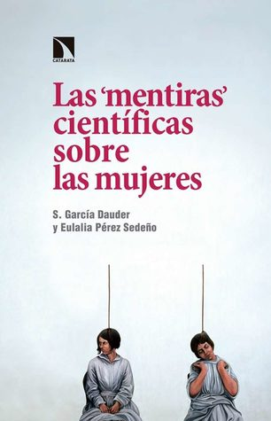

Las "mentiras" científicas sobre las mujeres
Reseña por Jorge I. Zuluaga

Ver reseña en GoodReads (necesita cuenta)
Aún así, no hay nada que te prepare para las perturbadoras verdades que revelan la psicóloga social Silvia García Dauder y la filósofa Eulalia Pérez Sedeño, ambas españolas, en este juiciosamente escrito y bien documentado ensayo sobre la conflictiva relación entre las mujeres y la práctica científica de los últimos siglos, si no de toda la historia.
Una relación que es conflictiva no por las mujeres mismas, que durante siglos de invisibilización profesional han contribuido con el avance del proyecto científico a pesar de una inaceptable falta de reconocimiento, sino y como nos los ilustran de forma amplia las profesores García Dauder y Pérez Sedeño, por una práctica científica atravesada por los sesgos estructurales del patriarcado.
El libro se organiza en 5 capítulos con temáticas muy bien escogidas:
Las mentiras de la ciencia, desde la justificación darwiniana de la inferioridad biológica de las mujeres hasta las supuestas diferencias cognitivas que todavía sostienen algunos investigadores.
Las mujeres invisibles de la ciencia y las mentiras que terminan contando los premios y reconocimientos o simplemente los libros de Historia de la ciencia que además ha sido escrita en su mayoría por hombres.
Los secretos que la ciencia guarda sobre las mujeres, órganos y funciones sexuales ocultas apenas "descubiertas" hace un par de décadas –aunque eran conocidas en la antigüedad– y el impacto de medicamentos y vacunas en el cuerpo de niñas, jóvenes y mujeres adultas.
Las mentiras inventadas por la ciencia sobre las mujeres, enfermedades que no lo son, dolencias mentales que solo son anormales para las farmacéutica y la absurda simplificación de la sexualidad femenina que ha hecho pensar a las corporaciones multimillonarias que fabrican medicamentos que se puede desarrollar un viagra femenino –el mejor viagra femenino creo yo, será el fin del patriarcado–.
Y finalmente pero no menos importante, una colección perturbadora de sesgos de género en la investigación científica, que han convertido a muchos resultados científicos en un producto tan imperfecto como algunos de los discursos no científico que nos enorgullecemos en criticar las personas que hacemos ciencia.
Hay temas que son muy sensibles para mí en el libro. Mujeres muy cercanas a mi vida toman algunos medicamentos cuyos efectos a largo plazo no han sido debidamente probados en el cuerpo de mujeres como ellas, un tema que describen con lujo de detalles las autoras de este libro.
Me preocupa perder a cualquiera de ellas por culpa de las mentiras científicas sobre las mujeres. Y este no es un problema epistemológico o una rabieta revisionista feminista como seguro la consideraran muchas personas que siguen sin entender de que va el feminismo. Hablamos de la vida de las personas que más queremos y que creemos está en manos de una ciencia objetiva y todopoderosa. Y este es sólo mi caso, el caso un hombre privilegiado que tiene a las farmacéuticas al servicio de su género. Para las mujeres que lean el libro, además de la vida de sus seres queridos, la que está en riesgo es su propia vida.
La reflexión final sobre la "verdad científica" en la sección titulada "Consideraciones finales" me pareció iluminadora. Una verdadera lección de epistemología con enfoque de género. De allí rescato esta fantástica cita de la psicóloga Helen Longino "la inclusión de la máxima pluralidad de perspectivas socialmente relevantes en la comunidad científica ('democracia cognitiva') redundará en una ciencia más objetiva”. Un dinosaurio en un dedal que deberíamos conocer quienes nos dedicamos a la ciencia y que desde las instituciones podemos cambiar la forma en la que se excluye la diversidad de la práctica de nuestra profesión.
De esa última parte me queda también la sensación de que la "verdad científica", especialmente aquella relacionada con quiénes somos y que ha sido construida en décadas de exclusión, debe ser revisada. O más bien, ya lo ha sido por profesionales como las autoras de este libro y aquellas que citan, pero sigue sin ser debidamente escuchada.
Si se dedican a la ciencia, no importa si son hombres o mujeres, deben leer este libro. Y si no, también.